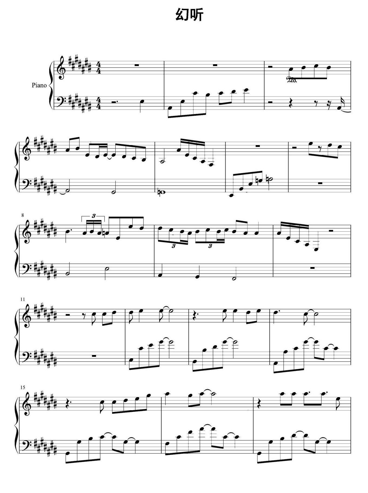

同一页5行、17小节、134个书写音头；两组使用相同原图、提示词和上下文，每模型2行并发，每行仅转写一次，不额外复读。两组均直接发起5次新请求，未复用历史识别结果；实际发出参数已核实为各自模型及low。
| 模型 | 整页耗时 | 返回情况 | 音符事件匹配 | 已报告tokens |
|---|---|---|---|---|
| gpt-6.1-sol low | 67.2秒 | 5/5 行 | 133/134（99.25%） | 14,664 |
| gpt-5.6-luna low | 15.4秒 | 0/5 行 | 未提交音符，无法评分 | 11,140 |
Sol low 返回全部134个音头，133个音符事件与事后比对的已校对稿一致。第5小节右手、行内第6.75拍、0.25拍的音符，应为A♯3（MIDI 58），被读为C4（MIDI 60）。原图已核对，保留原始错误输出，没有事后修改成绩。其余音高、拍位、时值、调号、拍号、小节长度及延音对照一致。
Luna low 五行均调用request_source，表示不能可靠完整读取，没有提交任何音符。15.4秒是拒识结束时间，不是成功识别速度；不能将其逐音准确率记为0%或100%。另将原PDF第1行按两倍尺寸渲染，单独补试一次，仍拒识，耗时7.2秒、3,403 tokens。补试使用不同输入尺寸，未混入上表。
本轮合计11次请求，29,207已报告tokens，所有调用均返回用量。这里的tokens不是订阅额度百分比。供应商内部提示词缓存不在本机控制范围内；本轮绕过的是识别结果、检查点和同PDF复用缓存，模型均重新收到谱图并作出响应。
匹配标准为音高、手别、起拍和时值（1e-4拍容差），延音等关系单独检查；力度和坐标未计入这个百分比。该单页结果不能推广为模型总体准确率，也不等同完整识谱、独立复读、校对及导入的总耗时。当前App默认high和曲库不变。
完整报告 · 11次请求明细 · Sol low原始识别 · Luna low原始返回 · Luna放大补试
